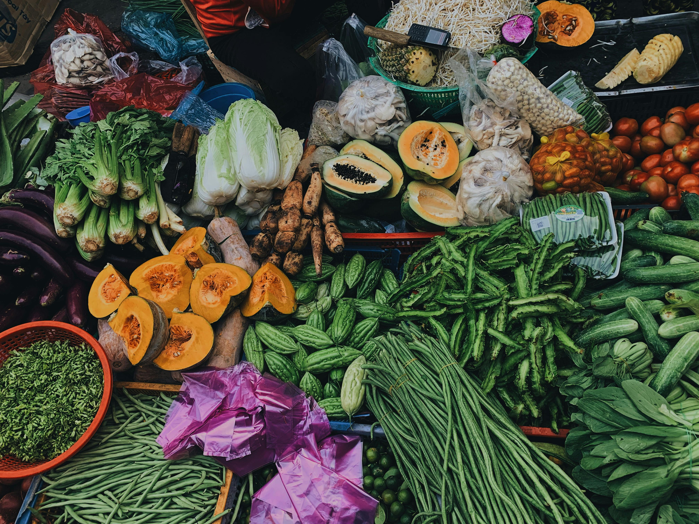
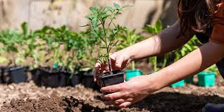
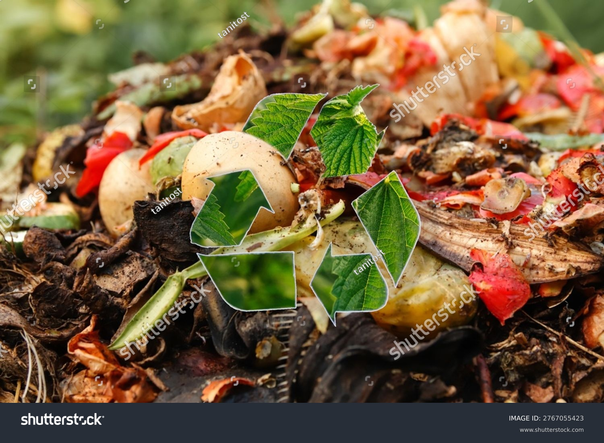

Sustainable food in Singapore means producing and eating food in ways that protect the environment, support local farmers, and reduce food waste.
Since Singapore imports around 90% of its food, sustainable food also focuses on growing more food locally using methods like vertical farming and smart technology.
It encourages people to buy local produce because it is fresher and creates less pollution from transportation.
Sustainable food also means reducing food waste by buying only what we need and recycling leftovers whenever possible.
In Singapore, sustainable food helps make sure future generations will still have enough safe and healthy food to eat.
Why Is Sustainable Food Important?

Fresh produce is an important part of sustainable food.
Sustainable food is important in Singapore because the country imports about
90% of its food. Growing more food locally helps improve food security during
global crises or supply disruptions.
Buying local produce also reduces pollution from transporting food long distances
and supports a greener environment.
Singapore's "30 by 30" plan encouraged farms to use technology such as vertical
farming and smart farming to produce food more sustainably despite limited land.
Sustainable food supports local farmers and businesses, helping Singapore build
a stronger and more resilient economy.
Eating sustainable food can also be healthier because fresh local produce usually
contains fewer preservatives and chemicals.
Video About Sustainable Food
If you want to find out more about sustainable food, watch the video below.
Problems Revolving Around Food Import
What Is the Problem?
Singapore imports about 90% of its food from other countries because it has limited land for farming.
This makes Singapore heavily dependent on global food supplies.
Problems like wars, climate change, diseases, or transport disruptions can affect food imports and cause shortages or higher food prices in Singapore.
Importing food from faraway countries also increases pollution because planes and ships release carbon emissions during transportation.
Depending too much on imported food can make Singapore less prepared during global emergencies, such as the COVID-19 pandemic when supply chains were disrupted.
Because of these challenges, Singapore is working towards producing more food locally to improve food security and reduce reliance on imports.
From 2019 to 2021, Singapore imported over 90% of its food from more than 180 countries and regions.
To ensure a stable food supply for Singaporeans, the country sources food from many different countries. This strategy is known as diversification.
While diversification has benefited Singapore, it is also vital to strengthen food security by increasing local food production in case food imports are disrupted.
For instance, from 2019 to 2021, the number of licensed local food farms increased from 221 to 260.
More still needs to be done because global situations can be unpredictable.
If there were a sudden viral outbreak, food supplies could be severely disrupted, affecting the availability and prices of food in Singapore.
Therefore, it is important for Singapore to reduce its reliance on food imports and strengthen local food production so that the country can be more self-reliant during emergencies.
How Can We Lower High Import Rates?
People in Singapore can support local farms by buying food with the "SG Fresh Produce" logo, which helps reduce reliance on imported food.
Families can choose locally produced eggs, vegetables, and fish to support Singapore farmers and strengthen the country's food security.
Young people can grow simple vegetables or herbs at home using pots or community gardens, helping increase local food production.
Singaporeans can also learn more about sustainable food and encourage others to support local produce instead of depending only on imported food.
These small actions can help Singapore become less reliant on food imports and improve food security in the future.

Growing simple vegetables at home can support local food resilience.
Problems Revolving Around Food Wastage
How Does Food Wastage Occur?
Food waste is another major problem in Singapore because a lot of food is thrown away even though it could still be eaten.
Much of the food waste comes from over-ordering, over-buying, and over-cooking food at home and in restaurants.
Commonly wasted foods in Singapore include rice, noodles, bread, and other everyday meals that are often left unfinished.
Food waste harms the environment because most wasted food is burned, which uses energy and produces pollution.
It also affects Singapore's food security because the country imports most of its food, so wasting food means wasting valuable resources.
From 2021 to 2023, the total amount of food waste generated generally decreased from 817,000 tonnes to 755,000 tonnes, which is a good sign that food wastage is being reduced.
The increase in food wastage from 665,000 tonnes to 817,000 tonnes between 2020 and 2021 was mainly due to the COVID-19 outbreak, so it may not be a fair comparison when analysing overall food waste trends.
From 2021 to 2022, the percentage of food waste recycled increased from 18% to 19%, showing that Singapore took a step closer towards achieving zero food waste.
However, from 2022 to 2024, the percentage of food waste recycled remained at 18%, which suggests that Singapore still faces challenges in reducing food wastage and increasing recycling efforts.
Hence, more efforts need to be made to achieve zero food wastage in Singapore.
How Can We Achieve Zero Food Waste?
Singaporeans can help achieve zero food waste by buying only the amount of food they need and avoiding over-ordering or over-cooking at home.
Young people can reduce food waste by storing food properly, finishing leftovers, and bringing reusable containers when buying takeaway food.
Safe and unopened extra food can be donated to food distribution organisations instead of being thrown away.
Some households in Singapore compost food scraps or use food waste treatment methods to reduce the amount of waste sent for incineration.

Reducing food waste is important for a sustainable future.
Learn More
If you want to learn more about these problems, watch the related videos below.